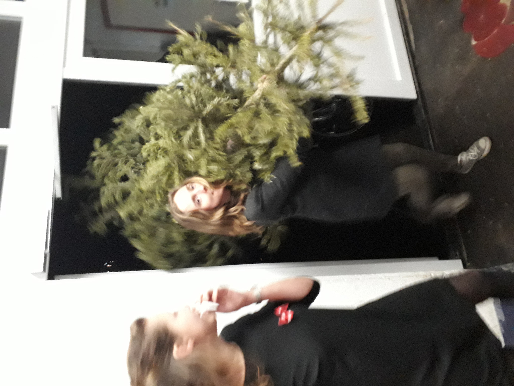

Oudlicht op trainingskamp
Binnenkort verkrijgbaar!
Krokante knaapjes
Woensdag 2 januari 2019. Vier jonge blonde krokante knaapjes liepen door de straten van Knokke-Heist. Het was een heldere avond waarop de jongens hadden besloten om gekleed in grijze joggingbroeken en slippers even het strand van deze bekende badplaats in West-Vlaanderen te bewonderen. Na een mooie strandwandeling besloten de jongens naar huis te gaan om de volgende dag weer fris in de boot te stappen. Op de terugweg verscheen in de verte een slank gestalte. Het leek wel alsof er een engel uit de hemel was gevallen maar in plaats van vleugels droeg ze een Tommy Jeans trui. Als perfectie zou bestaan, liep het hier op de stoep in Knokke-Heist. De vier lichte pikken keken allemaal in tunnelvisie naar deze blonde kruising tussen Cleopatra en Jennifer Aniston. Wat de jongens niet wisten was dat haar hele familie, waaronder haar vader, achter haar liep. Maar in plaats van dat haar vader boos werd omdat er vier jongens met een capuchon op ongegeneerd zijn dochter aan het observeren waren, sprak hij de legendarische woorden: ´´Tast maar toe, jongens´´ Oudlicht - Tast maar toeConiferen op tijd gearriveerd
